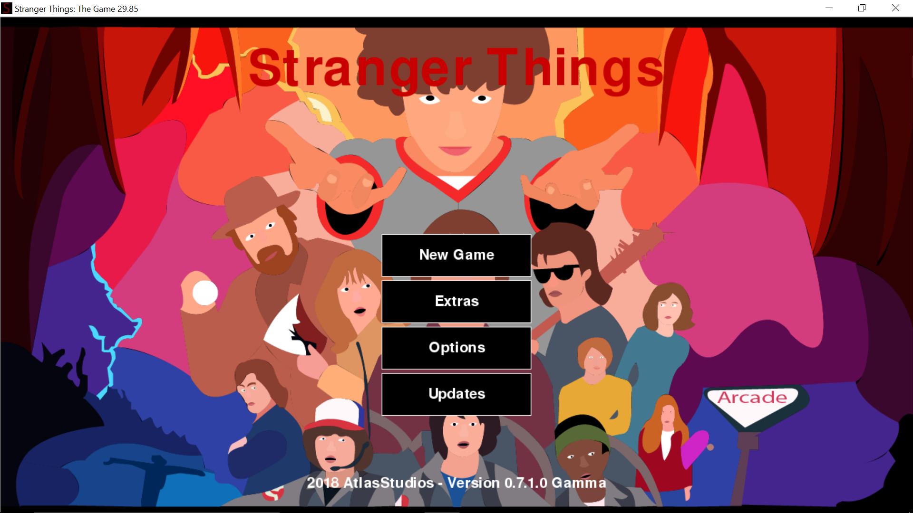

Stranger Things: The Game (2018): was AtlasStudios first more modern game (more modern as in code and graphics). It is based off the Netflix Original Stranger Things and has been the center of many accomplishments in AtlasStudios (menus, cutscenes, open world levels, downloadable version of the game, and an installer). It runs at 60 fps (with no huge lag spikes) and was coded using Python 3.6.5.
(This was also a school project for a Scholastic competition)
Stranger Things: The Game (Remastered) (2023): is a remaster of the original project with updated code and some updates to graphics. It is expected to be released sometime in 2024 for the 6 year anniversary.